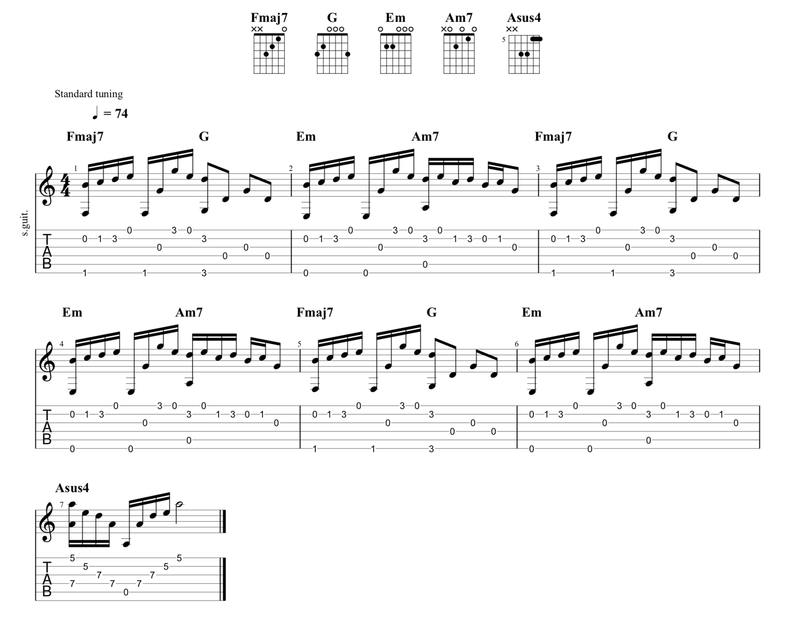
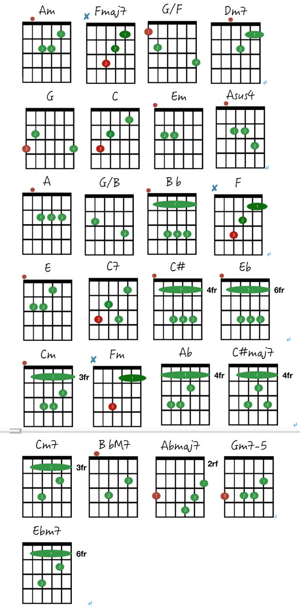

教學影片


吳青峰【起風了】吉他彈唱教學(內附譜)
2019/06/09 徐溢鴻
今天要教大家吳青峰演唱的起風了! 中間用了許多慢歌、流行歌必學的伴奏手法，趕快練習吧~
吉他譜


原調：Eb-B
Capo：3 Play：C
前奏 |Am |Am |
|Fmaj7 G/F |Fmaj7 G/F |Dm7 G |C |
我曾將青春翻湧成她 也曾指尖彈出盛夏 心之所動 且就隨緣去吧
|Fmaj7 G |Em Am || x 3
|Fmaj7 G |Asus4 A |
|C |G/B |Bb |F |
1.這一路上走走停停 順著少年漂流的痕跡 邁出車站的前一刻 竟有些猶豫
2.短短的路走走停停 也有了幾分的距離 不知撫摸的是故事 還是段心情
|Dm7 G |Am |F G |C |
1.不禁笑這近鄉情怯 仍無可避免 而長野的天 依舊那麼暖 風吹起了從前
2.也許期待的不過是 與時間為敵 再次看到你 微涼晨光裡 笑的很甜蜜
|F G |E Am |
從前初識這世間 萬般流連 看著天邊似在眼前
|Dm7 G |C C7 |
也甘願赴湯蹈火去走它一遍
|F G |E Am |
如今走過這世間 萬般流連 翻過歲月不同側臉
|F G |Am |
措不及防闖入你的笑顏
|F G |Em Am |
我曾難自拔於世界之大 也沉溺於其中夢話
|F G |C E|
不得真假 不做掙扎 不懼笑話
|F G |Em Am |
我曾將青春翻湧成她 也曾指尖彈出盛夏
|F G |Am |F G |
心之所動 且就隨緣去吧 逆著光行走 任風吹雨打
|Fmaj7 G |Em Am |Fmaj7 G |Asus4 A |
|F G |Asus4 A |C# Eb |
措不及防闖入你的笑顏
|C# Eb |Cm Fm |
我曾難自拔於世界之大 也沉溺於其中夢話
|C# Eb |Ab C |
不得真假 不做掙扎 不懼笑話
|C# Eb |Cm Fm |
我曾將青春翻湧成她 也曾指尖彈出盛夏
|C# Eb |Ab |
心之所動 且就隨緣去吧
|－ C#maj7 Cm7 － |－ Bbm7 Abmaj7 － |
晚風吹起你 鬢間的白髮 撫平回憶 留下的疤
|Gm7-5 C7 |Fm - |Ebm7 Ab |
你的眼中 明暗交雜 一笑 生花
|C# Eb |Cm Fm |
我仍感嘆於世界之大 也沉醉於兒時情話
|C# Eb |Ab C |
不剩真假 不做掙扎 無謂笑話
|C# Eb |Cm Fm |
我終將青春還給了她 連同指尖彈出的盛夏
|C# Eb |Ab |C# Eb |
心之所動 就隨風去了 以愛之名 你還願意嗎
尾奏 ||C# Eb |Cm Fm || x 4
學吉他的常見問題
2019/06/09 徐溢鴻
也許，曾經有人告訴你學吉他很容易，也有人告訴你學吉他很難。對你來說，過來人的建議也許真的是那麼讓你迷失。你不禁產生了疑問：到底難還是容易？到底我該怎麼入手？今天，小編將為你總結出很多初學者的疑問，相信這些也正是你初涉吉他世界的困惑。了解的越多，對後面的學習越有幫助！
學吉他到底難嗎
回答這個問題之前，請先給自己一個暗示性的問題：我能堅持下來嗎？沒錯，就是堅持！對於任何一個想要堅持做好一件事的人來說，這件事都不會難。吉他只是一門樂器，它本身沒有生命。何況在弦樂器家族中，吉他應該算是上手相對容易的成員了。所以，你還擔心它很難嗎？ 只要你：有堅持的決心、虛心的學習、循序漸進的刻苦練習，恭喜你！你已經克服了學吉他的所有困難，邁向了高手之路。
學吉他有年齡限制嗎
相信提這個問題的朋友，基本上都是為孩子問的。現在很多家長都樂見孩子在藝術方面有一技之長，一來豐富孩子的業餘生活，二來提升孩子的性情。但是，學習樂器對孩子來說格外慎重，因為他們的智力、身體結構都發育得不夠完善，有些樂器對他們來說非常吃不消。學習鋼琴通常可以從4-5歲開始，但是，吉他建議從8歲開始。一般來說，學吉他的大多是男孩，8歲左右，男孩的骨骼發育基本上達到了學吉他要求的硬度；女孩則從8歲半到9歲開始。當然，如果要學習烏克麗麗的話，學習年齡可適度降低。
學吉他要多久才能獨立彈唱歌曲
同學，請不要著急。如果你想彈歌，很多老師都可以跟你保證，只要兩天就夠了，因為只需要告訴你，這首歌用到哪些和弦，這些和弦是怎麼按的，然後你自己照著譜，跟著感覺去轉換和弦。悟性高的通常一天不到，就能很不流暢地彈完這首歌；悟性相對普通的人，也只需要大概兩天就能搞定，最後拿一個星期來熟練轉換和弦了。
然後呢？就沒有然後了。你的發展路線，就只有一個，那就是「和弦機器人」——每首歌都只知道照著和弦趴下來（這還是有樂感的同學才能做到），想要提升？門都沒有！你的手指都養成了壞習慣，這些壞習慣阻礙了你的進步，你怎麼提升？所以，請不要再問我多久可以彈唱歌曲的問題。因為我們強調基礎。你需要跟著老師的要求去做，打好紮實的基本功，再由淺入深地學習彈唱。這樣，即使以後你自學，也能夠非常順手！這需要多久，就要看你能堅持練習到什麼程度！
然後呢？就沒有然後了。你的發展路線，就只有一個，那就是「和弦機器人」——每首歌都只知道照著和弦趴下來（這還是有樂感的同學才能做到），想要提升？門都沒有！你的手指都養成了壞習慣，這些壞習慣阻礙了你的進步，你怎麼提升？所以，請不要再問我多久可以彈唱歌曲的問題。因為我們強調基礎。你需要跟著老師的要求去做，打好紮實的基本功，再由淺入深地學習彈唱。這樣，即使以後你自學，也能夠非常順手！這需要多久，就要看你能堅持練習到什麼程度！
手指太疼了，可以戴指套或纏膠帶練習嗎
這個問題很普遍，初學吉他的朋友可以說人人都會遇到，這也是放棄學習的主要原因之一。但是，小編堅持認為，你不能戴指套或膠帶以及一切用來保護你手指、緩解疼痛的東西！學習任何技能都需要付出，而你手指的痛感就是一種付出。現在的痛就是為了以後的不痛。當經歷了十指連心的疼痛之後，你的左手會慢慢積上一層繭。而有了這一層繭之後，你不會再覺得痛了。如果一開始就採用保護措施，非但隔離了手指與琴弦的親和力、無法鍛鍊吉他手感，甚至你所按的弦會彈出很難聽的聲音。因此，建議學生們堅持一周。就一周！你將不會再受這個問題的困擾。
是不是不學樂理就不能學吉他了
其實不會樂理也能學吉他，也能彈唱彈得很順，演奏得很好聽，但是！樂理在音樂編曲創作上扮演著重要的角色，如果你的目標是成為一位職業樂手、創作家、編曲家、老師等，樂理就是你不可忽略得項目囉！當然！如果你只是想把彈唱學好，還有視譜演奏一些歌曲，那麼樂理所需要的比例就會少很多，你只需要學習基礎的六線譜，能簡單讀譜就OK了。
樂理小老師
地址
台北市萬華區昆明街106號3樓
捷運6號出口出來後沿成都路(7-11方向)直走,
見星巴克即右轉找到106號上3樓
捷運6號出口出來後沿成都路(7-11方向)直走,
見星巴克即右轉找到106號上3樓